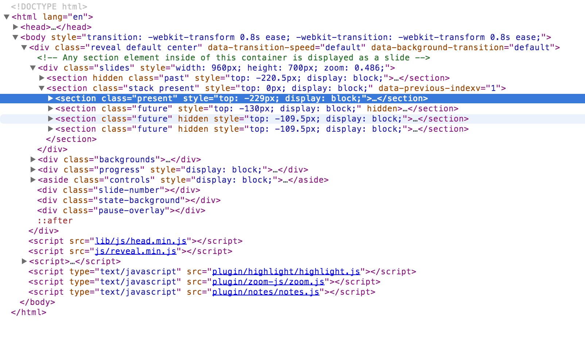

What's that thing called DOM?
This is the DOM
Thank you!
Any questions?
Let's rewind!
In the beginning, there was HTML
... and everything was static and boring
<HTML>
<TITLE>
A HTML page
</TITLE>
<P>
And a paragraph
<A HREF="somepage.html">And a link</A>
</P>
</HTML>
A little history
- 1993:HTML 1.0 specification released
- 1994:W3C is founded to promote open standards for the web
- 1995:Browser wars - Microsoft and Netscape battle for biggest browser market share
- April 1995:Brendan Eich creates JavaScript for Netscape in 10 days
- September 1995:Netscape releases JavaScript in the Netscape Navigator 2.0 beta
- August 1996:Microsoft releases a JavaScript clone called JScript for IE 3.0
- June 1997:W3C standardized JS as ECMA-262 (officially called ECMAScript now)
- December 1997:HTML 4 specification is published
And how exactly is this relevant?
JS needs to interact with the page in some way
... but there is no standard
... so JS is useless
Flash forward
This presentation is running in the browser
Using JS
So what happened?
How do browsers work?
- Browser gets HTML from server
- Browser parses HTML into a tree representation
- Browser requests external files if mentioned in HTML (JS, stylesheets, images)
- Layout Engine parses the HTML tree and stylesheets, renders image to screen
- Browser runs JS
- Browser waits for user interaction
Did you just say tree?
 Shamelessly lifted from w3schools
Shamelessly lifted from w3schools
The DOM
Some more history
- 1997:MS releases IE 4.0, Netscape releases Netscape 4.0 - Both with support for Dynamic HTML (DHTML)
- 1998:W3C publishes DOM Level 1 standard
- 2000:W3C publishes DOM Level 2 standard
- 2004:W3C publishes DOM Level 3 standard